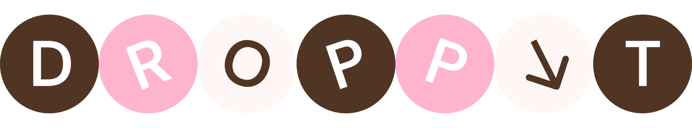
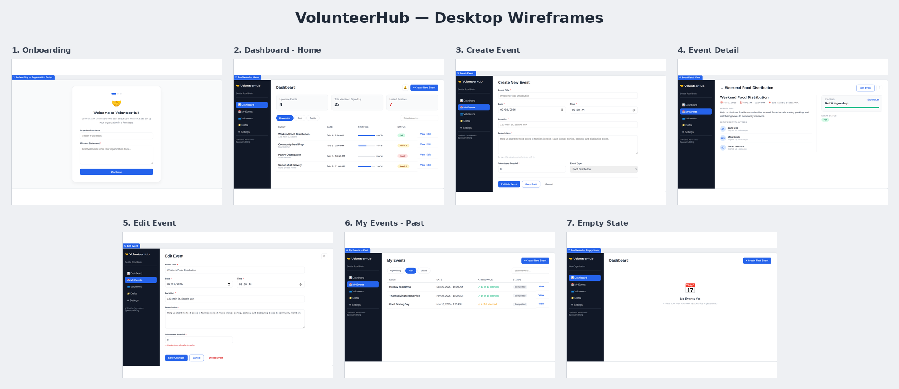
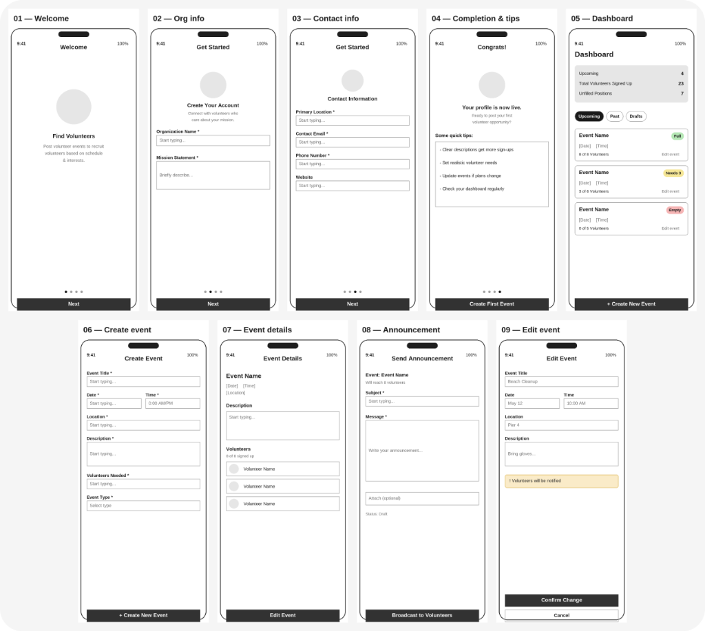
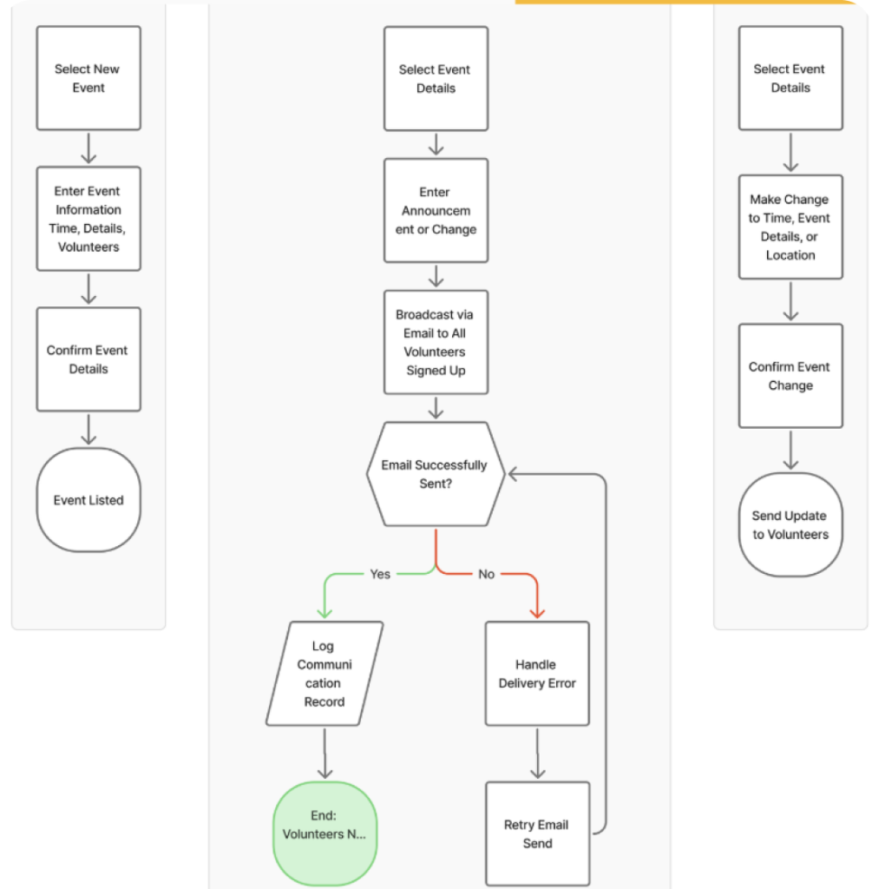
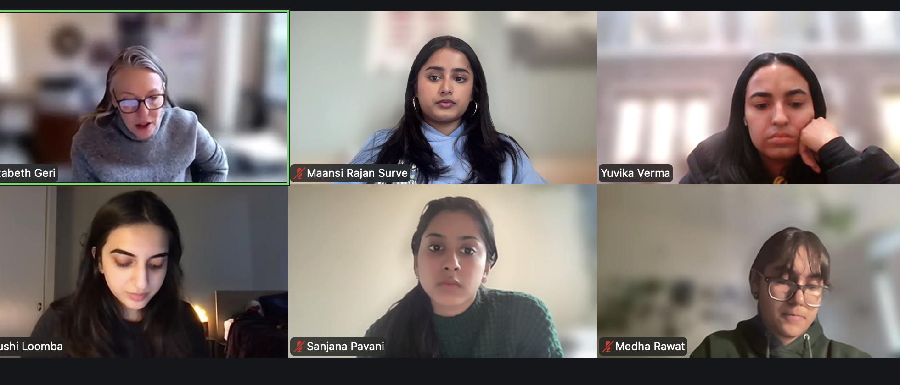
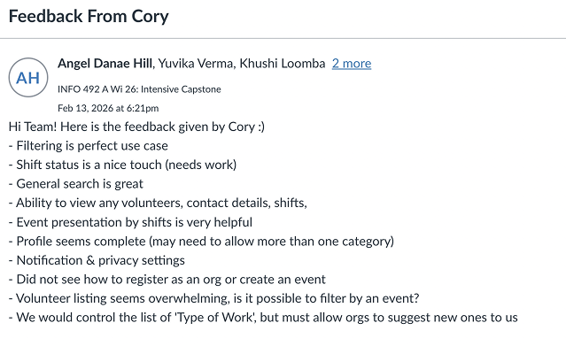
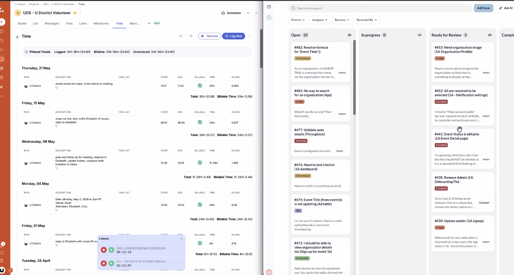

OVERVIEW
Taking the trip out of the group chat.
You've sent the TikTok. You've made the spreadsheet. You've typed "bumping this" into the group chat for the fourth time. And somehow, the trip still isn't planned.
That's the gap droppit fills: one shared space where every idea, list, and plan actually lands, instead of disappearing into scroll-back. Let's take this trip out of the group chat.
RESEARCH & INSIGHTS
Gen Z Trip Planning
Gen Z has trip inspo everywhere. The problem isn't finding ideas—it's keeping them organized.
Gen Z trip planning is very “save now, organize later.” Travel inspo starts on social—especially TikTok, Instagram, and Pinterest—but the actual planning still happens across screenshots, Notes, Google Sheets, and messy group chats.
TikTok travel videos get 40x more saves than comments, showing that people collect ideas faster than they act on them. A Troupe UX case study also found that 89% of people find group trip planning stressful, and 86% want trip details centralized in one place.
Key Insights
- Planning is fragmented: Ideas live across TikTok saves, screenshots, Notes, Sheets, and group chats.
- One friend becomes the PM: The most organized person ends up researching, organizing, and chasing replies.
- Group chats are bad for decisions: Small choices like food, transport, and timing turn into endless back-and-forth.
- Budgets surface too late: Cost, pace, and trip style usually come up after tension already starts.
COMPETITOR LANDSCAPE
Competitors solve slices, not the full flow.
None fully combine inspo, docs, lists, sheets, and group visibility in one lightweight hub.
THE SOLUTION
MVP Scope & Core Loop
Instead of building a full itinerary app right away, the MVP focuses on the highest-impact behavior: making it easy to drop anything into one shared trip hub.
The Core Loop
Create trip → Invite friends → Tap + → Add a doc → Everyone sees update
What Ships in v1: The Doc Types
- 📌 Inspo Board: A grid for saved images, links, screenshots, and travel ideas.
- 📊 Sheet: A flexible grid for budgets, comparisons, or logistics.
- ✅ List: Checklists for packing, places, tasks, or reminders.
- 📝 Note: Quick freeform text for ideas, plans, or research.
Not In v1 (Intentional Constraints)
To keep the MVP focused, features like Voting (already a crowded space), Dedicated budget tools (handled through Sheets for now), Maps (useful later, but separate from core docs), and Rich text editing (kept lightweight for validation) are intentionally excluded.
EXECUTION
Building the Prototype
Once the MVP was defined, I used Claude to shape the initial product prompts, then used Figma Make to build the prototype.
Claude helped me translate the research and MVP scope into clearer product logic, while Figma Make helped me move faster from idea to interface. I then refined the flow, screens, and product decisions myself to make the experience feel lightweight, social, and easy to use.
Where You Go
HACKATHON
Overview & Context
I’m happy to share that our team placed Top 3 🏆 in the “Best Design” category at the UW Women in Informatics 14th Annual Hackathon!
This year’s theme was “Depths of Discovery, Currents of Creation,” and my team and I prototyped an experience-first discovery app called Where You Go. We reimagined how people find places in a world where platforms like TikTok and Yelp often prioritize popularity & viral trends over what you’re actually looking for.
With Where You Go, users can search prompts like “Where should I go with my friends to grab a quick coffee & catch up?” and receive recommendations based on real lived experiences & intention, making exploration feel more authentic & personal.
My Contributions
I focused on designing the Onboarding flow 👩🏽💻 (introducing the concept in a familiar, intuitive way), the Home page experience 🏠 (with mood-based discovery & map exploration), and the Favorites page ❤️ (helping users save, filter, and return to meaningful places).
THE PRODUCT
Core App Features
An experience-first discovery app designed around emotional landscapes, mood trends, and AI-powered recommendations.
- 🔍 Experience-first AI search: Find places based on mood, intention, or a custom natural language prompt rather than pure reviews.
- 🗺️ Interactive city map: Visualizes locations as emotional landscapes representing the feelings and vibes associated with places.
- ⭐️ Personalized recommendations: Highly custom suggestions coupled with trending experience categories.
- ❤️ Favorites & saved places: Fast saved-place access with quick mood-based filters for easy revisiting.
- 👤 Profile recaps & mood trends: Insights and analytics reflecting on how you explore the city over time.
DESIGNS & FLOWS
Feature Walkthrough & Designs
Interactive walkthrough of the onboarding, home, search, and favorites flows.
Onboarding Flow
We intentionally designed this to be educational about the app’s features by showcasing what exactly the app offers as users begin to create their account. This helps build initial trust and explains the experience-first discovery method.
Home Page Experience
The Home page was designed to be easy to use and provide multiple valuable insights all in one place:
- Auto-recommendations: Discover experiences instantly.
- Trending features: Personalized categories matched to your interest.
- Interactive maps: Visualizes cities as emotional landscapes representing the feelings of places.
AI-Powered Search
The Search page uses AI to analyze and summarize community reflections, internet reviews, and social media content to extract emotions & generate cohesive "profiles" for each place. These profiles power personalized recommendations, trending experience categories, and our interactive city map.
Favorites Page
All your saves are accessible in a clean, scrollable layout. Features additional filters and a search engine for easy viewing and quick filtering by mood.
LEARNINGS
Collaboration & Takeaways
Iterating rapidly under constraints while receiving invaluable mentorship from industry professionals.
Although the event moved incredibly fast, I gained so much insight from the mentorship we received throughout the weekend. Huge thank you to the designers from PitchBook & The Walt Disney Company who chatted with us — your guidance truly helped us solidify our concept and tell a stronger story.
Key Takeaways
Most importantly, shoutout to my amazing teammates! We spent hours ideating, designing, and building together, and this experience was genuinely so special because of your creativity & talent.
Designing AI-assisted support for Windows 365 devices
Explored how AI could help users diagnose and resolve device issues faster, while keeping IT administrators informed and in control of consequential decisions.
Making enterprise support feel more immediate and understandable
Windows 365 allows users to access a Cloud PC from supported devices. For organizations, this can simplify deployment and device management. However, when a device fails to connect, start, or function correctly, the support experience can become difficult for both the employee experiencing the issue and the IT administrator responsible for resolving it.
During an 8 week design sprint, I led exploration for how AI could reduce repetitive support work, help users understand what was happening, and carry useful diagnostic context into the troubleshooting process.
When the device stops working, access to support can break down too
Users may encounter issues before they can sign in, connect to their Cloud PC, or access normal workplace support tools. They are then expected to identify and explain technical problems they may not understand.
For IT teams, incomplete support requests create additional investigation, repeated communication, and longer resolution times. Many common issues are straightforward, but administrators still need visibility into what the system is doing and control over actions with operational or financial consequences.
| The Friction | For Users | For IT Administrators |
|---|---|---|
| Accessibility | Support is difficult to reach from the affected device | Requests arrive through multiple fragmented channels |
| Context | Varying confidence levels being able to describe device issues | Tickets lack diagnostic details, requiring manual investigation |
| Resolution | Waiting for help creates downtime and frustration | Repetitive issues consume time, but automation feels risky without oversight |
How might we help users identify and resolve device issues faster while giving IT administrators appropriate visibility and control?
Research revealed friction on both sides of support
I synthesized more than 40 insights from users, IT administrators, surveys, support-ticket patterns, and existing support experiences. Three themes consistently shaped the direction of the concept.
- • Users did not know where to begin: When something stopped working, users often relied on people they already knew instead of finding the correct support channel.
- • Describing the issue slowed diagnosis: Users struggled to identify the technical cause, leaving IT to reconstruct the problem manually from vague tickets.
- • Administrators wanted bounded automation: IT teams were open to AI handling routine diagnostics, but required strict visibility and control over consequential actions like replacements.
Four principles guided the experience
-
🔓 Accessible anywhereSupport remains available even when the affected computer is frozen or unable to start.
-
🧠 Automatic contextDiagnostic data is carried forward so users don't have to explain technical details from memory.
-
🎙️ Flexible communicationUsers can troubleshoot via text, voice, screenshots, or guided visual instructions.
-
⚖️ Meaningful human controlAI handles routine troubleshooting, while IT administrators retain oversight of high-impact decisions.
An off-device support journey with built-in context
The proposed experience lets users access support from their phone, transfer relevant diagnostic information from the affected device, communicate through the format best suited to the situation, and involve an IT administrator when a consequential action is required.
Start support outside the affected device
The affected device could be frozen, disconnected, or unable to start. Designing the support experience only inside that device would make help unavailable at the moment it was needed most.
I used QR codes as a bridge between the computer and the user’s phone. A code placed on the physical device could provide a persistent support entry point, while an on-screen code could carry context from a specific error state.
A persistent support entry point allows users to begin even when they cannot sign in.
An error-state QR code can transfer issue context into the mobile experience.
Why this approach
- Keeps support available when the primary interface fails
- Reduces reliance on users finding the correct support channel
- Creates a clear handoff between the device and mobile support
Let users communicate in the format best suited to the problem
Technical issues can be difficult to describe through text alone. Some problems are easier to show through a screenshot, while others benefit from a spoken conversation or step-by-step visual guidance.
The mobile experience supported text, voice, and images within the same troubleshooting journey. Users could begin with a suggested issue, describe something in their own words, share a screenshot, or switch to a call when needed.
Suggested issues and conversational troubleshooting
Users can share what they see instead of translating it into technical language
Users can move into a real-time guided conversation
Why this approach
- Reduces the burden of describing technical problems
- Allows the AI to use visual and conversational context
- Gives users flexibility without making them restart the support journey
Automate routine work without removing administrator control
AI could help diagnose common issues and complete repetitive troubleshooting steps, but not every action should happen automatically.
For decisions with greater operational or financial impact, such as replacing a device, the AI creates a concise record of completed diagnostics, identifies the likely issue, and recommends a next step. The administrator can then review the information and approve or reject the action.
Why this approach
- Reduces time spent on repetitive investigation
- Gives administrators visibility into AI actions
- Maintains human judgment for consequential decisions
What I learned
The hardest part of designing AI support was not the conversational interface itself. It was coordinating the handoffs between a malfunctioning device, the user’s phone, the AI system, and the IT administrator.
This project taught me to think beyond individual screens and design the larger service experience: how users access help, how context moves between systems, where automation is appropriate, and when human judgment must remain involved.
Design for failure states first
Support products must remain understandable and accessible when the primary experience is unavailable.
AI needs visible boundaries
Users and administrators need to understand what the AI knows, what it has done, and when it requires approval.
Cross-device flows require continuity
Switching devices should not mean restarting the problem or losing context.
Additional project artifacts
A limited set of additional process and interface artifacts may be available for portfolio reviews.
Access is provided only when appropriate and does not include material that I am not permitted to share.
Microsoft 2025 — Additional artifacts
This section contains a limited set of additional artifacts for portfolio conversations. The content has still been reviewed and simplified for confidentiality.
Expanded Service Flow
(Would fetch from assets/unlocked/service-flow.png)
Detailed Mobile Interaction States
(Would fetch from assets/unlocked/interactions.png)
Administrator Workflow
(Would fetch from assets/unlocked/admin.png)
Windows 365
Project Access
Design contributions for next-generation Windows experiences are currently protected by a Non-Disclosure Agreement.
U District Advocates
Active beta — piloting with local nonprofits in Seattle's U District.
For our senior capstone, my team partnered with UDistrict Advocates to design a no-code volunteer coordination platform from the ground up. After presenting the concept to co-founder Cory Crocker and our capstone evaluators, our project was selected to move forward. It later became an active beta, and I was invited to continue working with the organization to help bring the platform into real community use.

PROJECT OVERVIEW
The Need for Centralization
STAKEHOLDERS
Research & Community Needs
Gathering direct insights from stakeholder conversations and secondary audits of nationwide registries to ground our design decisions in real community needs.
We met with Cory Crocker (U District Advocates President) to understand workflows, constraints, and capacity.
"You're more or less building a dating app—matching volunteers with organizations."
— Cory CrockerAudited patterns at volunteer registries: Solid Ground, Feeding America, Meals on Wheels, American Red Cross, and Habitat for Humanity.
- Ecosystem Gaps: Identified weak social connections between volunteers and admins.
- Adoption Friction: Audited patterns in event-based vs. recurring volunteer matching.
- Generic Signups: Found little support for skill-based placement.
FOCUS AREAS
Focus Areas
Identifying systemic gaps in centralized discovery, volunteer impact visibility, and nonprofit administrative resources.
To understand the coordination landscape, we conducted a stakeholder interview with Cory Crocker and carried out secondary research, uncovering three critical gaps:
"U District Advocates has the opportunity to support local nonprofits by providing a way to collect and use volunteer commitment information, enabling a consistent, dependable pool of volunteers for ongoing neighborhood advocacy work in the U District."
FEATURES & WIREFRAMES
Wireframes & Feature Planning
Mapping user scenarios and lo-fi prototypes before moving into high-fidelity Figma designs.
We mapped user scenarios across both sides of the platform, then built lo-fi wireframes using Lovable as a fast baseline — before refining into high-fidelity designs in Figma.
Dashboard
View ongoing events, track current status, and manage administrative workflows at a glance.
Volunteer Directory
Search, filter, find, and connect directly with volunteers to build a consistent support network.
Event Analytics
Analyze performance metrics and track localized community impact over time.
Each feature supports a different stage of the nonprofit admin workflow.
We mapped various user scenarios to explore all possible flows before finalizing them. These flows were then turned into low-fidelity prototypes for the first round of testing. We used Lovable to generate early wireframes, allowing us to explore design directions before refining the experience.



DESIGN SOLUTION
The Final Product: 3 Core Features
High-fidelity designs built to streamline shift lookup, skill-based filtering, and community impact metrics.
The Admin Side:
The Volunteer Side:
(Implemented by our partner team.)
DESIGN DECISIONS
Feedback & Key Pivots
Throughout the project, we continuously tested our assumptions through weekly team critiques, stakeholder reviews, and user feedback. Three moments in particular challenged our original direction and led to some of the project’s most meaningful design decisions.

Weekly sync w/ the team

Example of stakeholder feedback
What's Next
- Bug fixes & polish: Working through active usability feedback and support tickets from nonprofits piloting the beta.
- Nonprofit pilot testing: Coordinating with 10 initial local nonprofits to validate matching flows, event scheduling, and registration pathways.
- Feature expansion: Building out "Types of Work" taxonomies and volunteer security controls based on ongoing feedback.
